Chapter 2 Industry Snapshot
2.1 Local Finance
Key Points:
- Large banks experienced a slight increase in deposits as a percentage of liabilities with 73% at the end of 2019 compared with 69% at the end of 2018.
- In 2019, small banks continued their exponential growth in net income, currently 34% higher than in 2018.
- For the first time since 2012-2013, both small and large banks exceeded their pre-recession levels for return on assets.
FDIC Call Reports are released for all banks in the U.S., providing financial statement information to the public that is otherwise unavailable for private companies. The Local Finance section reports and analyzes banks that have a presence in Santa Barbara County. Using the data from FDIC Summary of Deposits, we examine each bank’s activity and health on a local level. For banks with an international presence, we are not able to factor out their international operations due to limitations in the data provided by the FDIC Call Reports. Therefore, 6 out of the 19 institutions have an aggregated total of both domestic and foreign operations for their assets and liabilities. The difference makes up about 4% of the total – which does not materially change the analysis on a local level.
In this section, we have two categories: large banks and small banks. Large banks are banks that operate on both regional and national levels; whereas, small banks are comprised of solely regional banks and banks with less than $2 billion in total assets. Big banks in this year’s data include Rabobank, Union Bank, Wells Fargo, JP Morgan Chase, Bank of America, First Republic Bank, Bank of the West, The Northern Trust Company, Pacific Western Bank, U.S. Bank, Citizens Business Bank, First Bank, and Banc of California. For our analysis on small banks, we have included American Riviera Bank, Community West Bank, Pacific Premier Bank, Montecito Bank & Trust, Community Bank of Santa Maria, Bank of the Sierra, and Farmers and Merchants Bank of Long Beach.
The data in this section has been adjusted for inflation; therefore, all numbers in the section are in terms of 2009 dollars. Nominal numbers have been adjusted to real numbers on a quarterly basis with the CPI from the Federal Reserve Economic Data, giving us a more accurate look at banking trends, particularly in times of large price movements.
2.1.1 Savings and Time Deposits
Deposits held by banks represent the vast majority of liabilities for both categories. At the end of 2019, large regional banks held 73% of their total liabilities as deposits, a small increase from 69% of their total liabilities in 2018. On the other hand, small regional banks held 87% of their total liabilities as domestic deposits, which has remained constant since the end of 2018. Since deposits represent such a large percentage of total liabilities, it is important to understand the trends within each bank category in order to understand where consumers are depositing money.
Small and large banks display similar trends in terms of deposits as a percentage of total liabilities. Until this year, large banks had been steadily increasing their deposits as a percent of total liabilities over the past few years, whereas small banks have been more volatile.
Since the Great Recession, both small and large banks have increased their percent of deposits as a fraction of liabilities. The growth for small regional banks occurred earlier in our data sample, peaking at 87% in 2010, and again at the end of 2019, 14% higher than at the end of 2007. At the end of 2019, large banks saw their highest percentage at 73%, 18% higher than it was at the end of 2007.
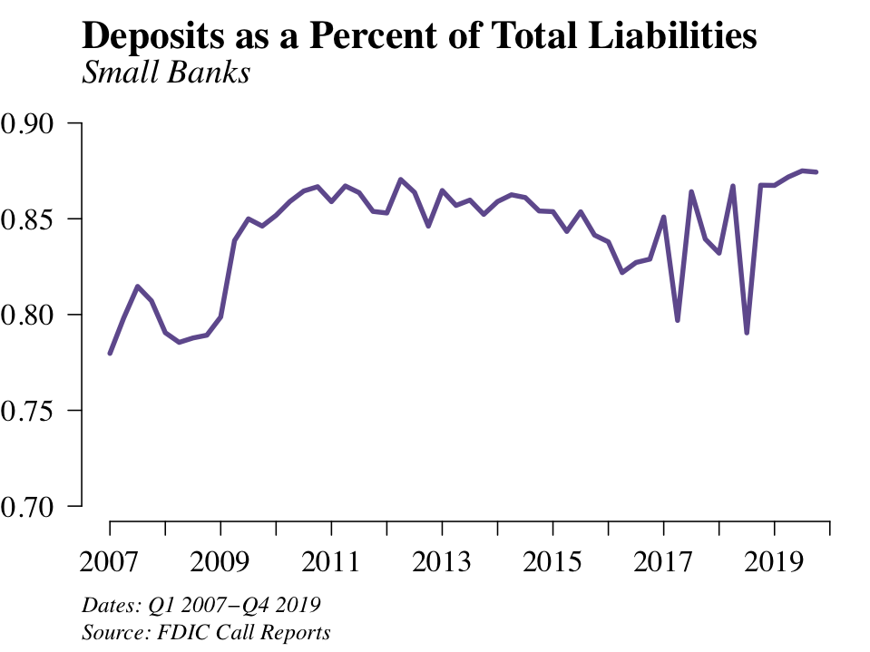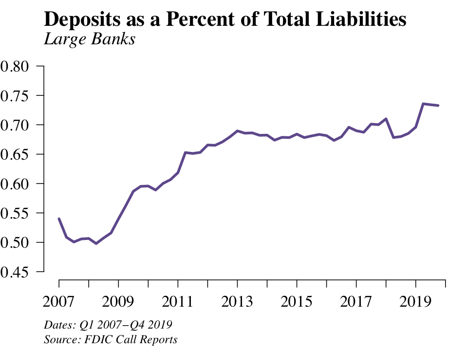

In 2019, the banking industry in Santa Barbara County consisted of 20 institutions with over $12 billion in deposits. Compared with last year, there was a decrease of -0.53% in deposits with an increase in the number of banks. The numbers in the table below are in nominal terms since the change in CPI from 2018 to 2019 was small, making the deposits relatively comparable. First Republic Bank experienced the largest increase in deposits of 16.7%; although, they remained in the same position in terms of market share. US Bank had the largest decline in deposits, falling from $57,631,000 to $47,051,000 or -18.36%. Consequently, it dropped one place in terms of market share. As banks know when their deposits will be measured every year, we cannot rule out some level of manipulation of deposits that leads to large fluctuations.
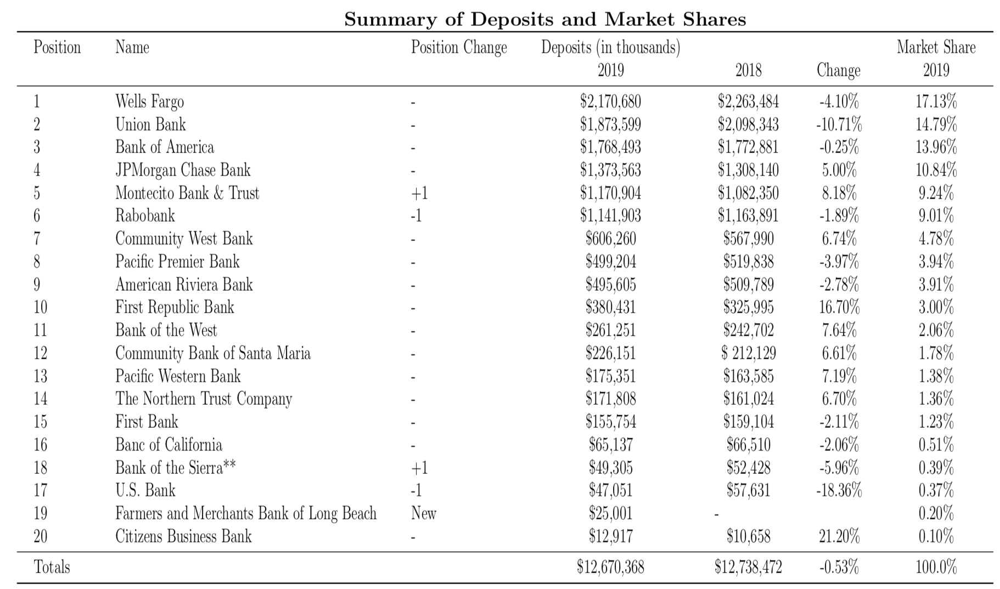
2.1.2 The Herfindahl-Hirschman Index
The Herfindahl-Hirschman Index (HHI) is a commonly used measure of industry concentration. Ranging from 0 to 1, the HHI is found by summing the squared market shares of all the firms. When the HHI is 0, a market has a large number of equally sized firms; on the other hand, when the HHI is 1, a market has only one firm. According to the Department of Justice, any market with a HHI between 0.15 and 0.25 is considered to be moderately concentrated. When a market exceeds 0.25, the Department of Justice finds it to be a concentrated market, which may require further review before any mergers can occur.
For Santa Barbara County, the current HHI is 0.1067. Therefore, the current banking industry in Santa Barbara is un-concentrated. The HHI for the County decreased by 4.1% compared with last year’s HHI of 0.1113.
2.1.3 Loans and Leases
In the past year, loans and leases appear to be trending upwards for large banks while the annual growth for small banks experienced a small decline. The average quarterly growth rate for large banks in 2019 was 5%, which is a big increase in comparison to .43% in 2018. Since the first quarter of 2007, the average quarterly rate of loans and leases for large banks has been 1.58%.
In 2019, small banks saw an average quarterly decline of -0.41%, lower than their growth rate in 2018, which was 7%. Additionally, final quarter numbers were 1.2% lower in 2019 than in 2018, ending the increasing trend of loans and leases from 2014 to 2018. For small banks, the average quarterly growth rate of loans and leases since 2007 is 8%.
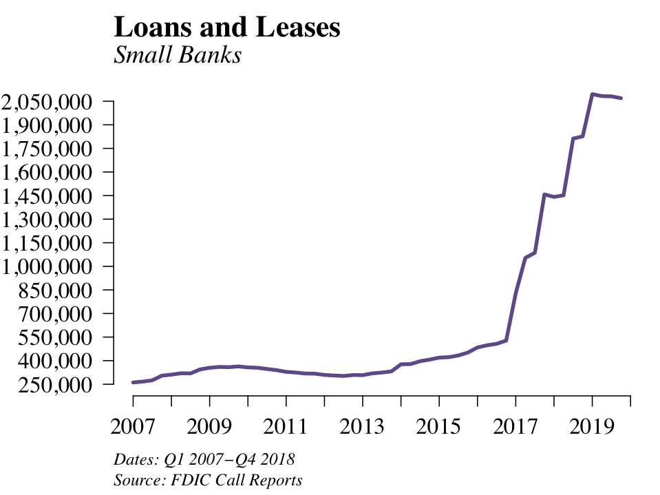
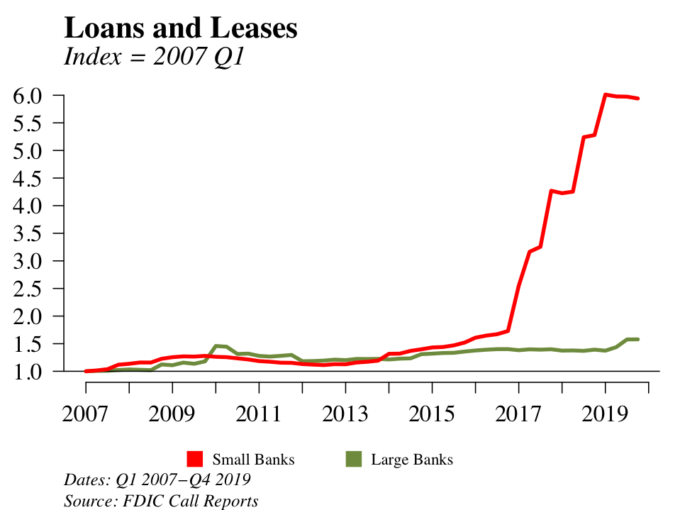
2.1.4 Net Income
Real net income has increased by 34% for small banks over the past year, surpassing 2018’s net income figure as the highest value over the last decade, recovering tremendously after years of 2009 and 2010 which saw negative values. For large banks, net income increased slightly by 3.8%, continuing the upward trend of the past few years.
Since the collapse of the financial markets in 2008, banks have experienced a healthy rebound. Although, simply looking at the value of net income does not account for the increase in the size of many banks. In order to take this into account, we divide net income by assets to calculate each bank’s Return on Assets (ROA). The ROA graph demonstrates the banks’ average return on assets this year compared with their average 2007 levels. By measuring this variable we can see that in 2019, both small and large banks have surpassed their pre-recession levels. In 2013, the total return on assets for both large and small banks declined, but there appears to be a robust rebound. Currently, large banks stand 7% higher than 2007 average return on assets while small banks are now at 38% higher than 2007 levels.
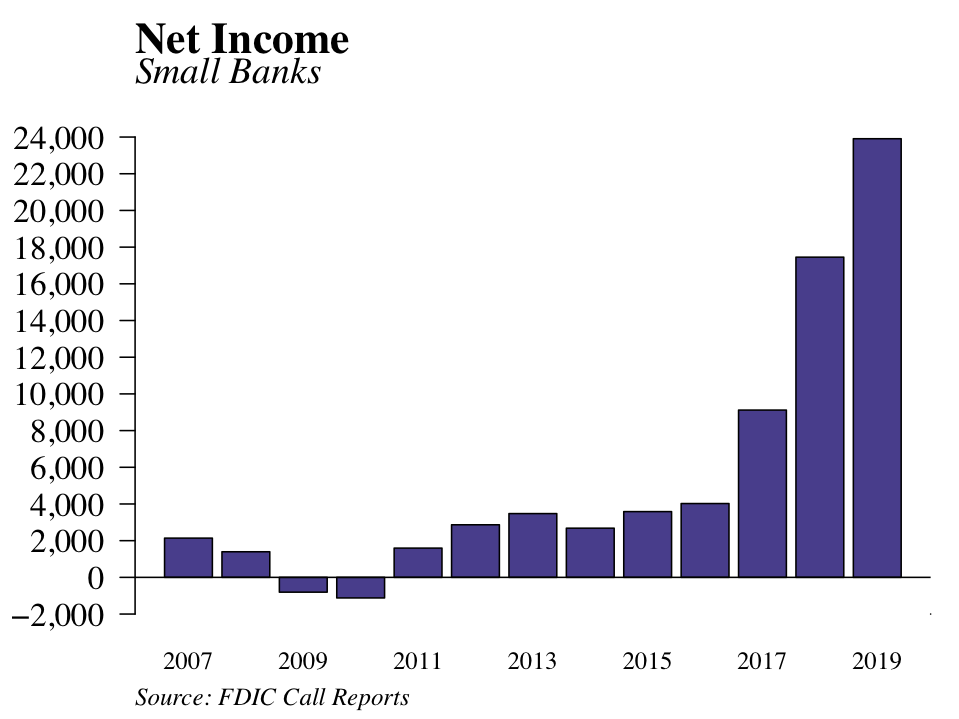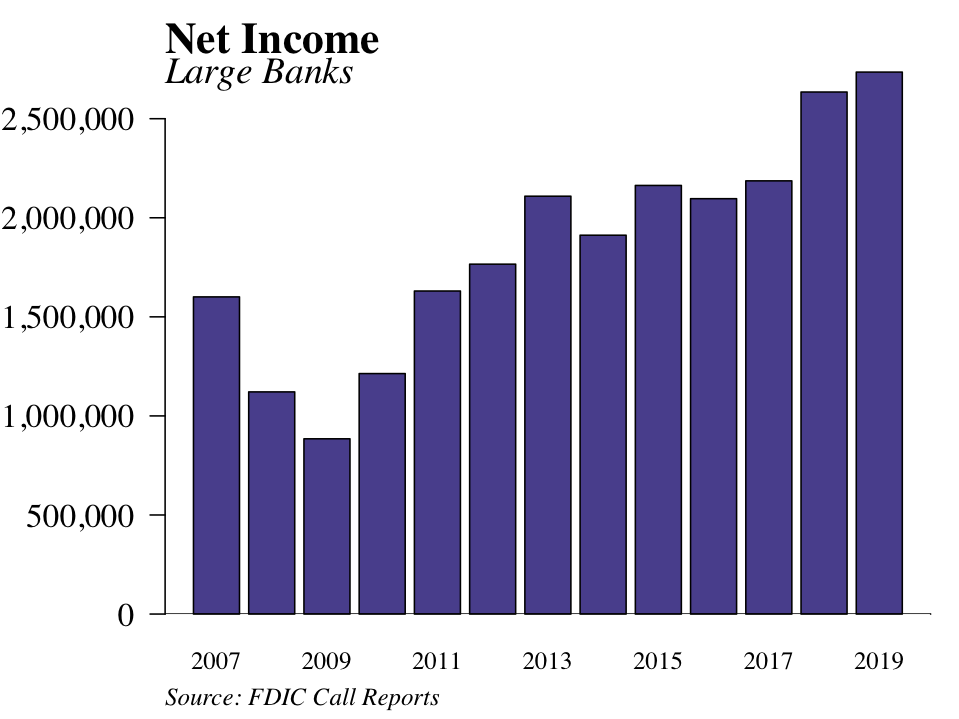
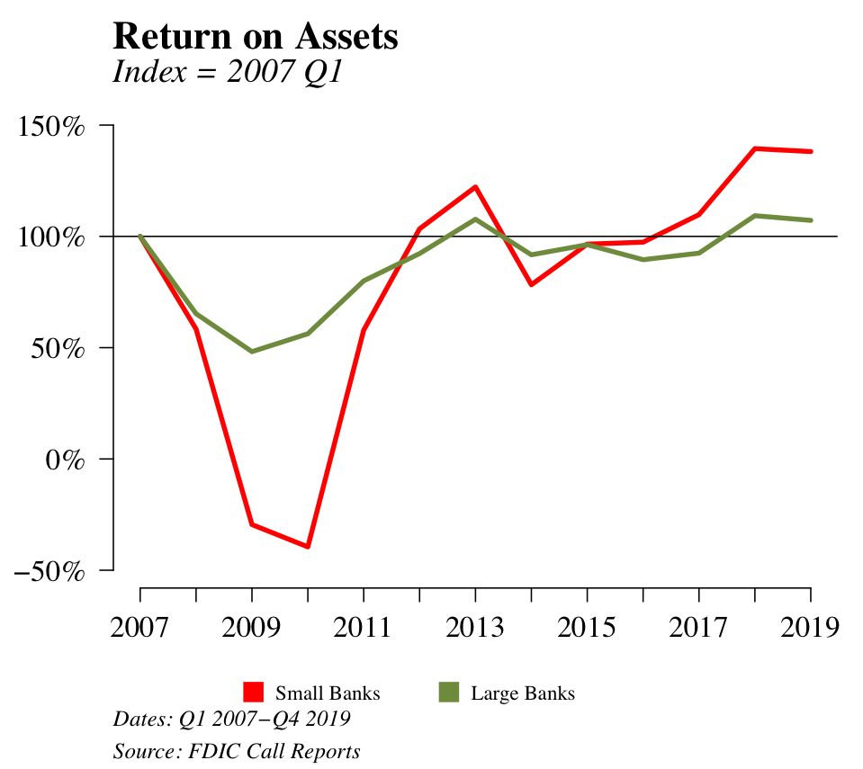
2.2 Oil and Gas
Key Points:
- California’s production of crude oil has been declining since the late 1980’s and dropped another 2.4% between 2017 and 2018.
- Onshore state gas production was the only category of gas or oil production that increased in 2018.
California’s field production of crude oil has been decreasing every year since 2014. Oil production decreased at a higher annual rate in 2019 at 4.5 percent compared to the decrease in oil production in 2018, about 2.5 percent. In 2016, the rate of production increased from 1.7 percent in 2015 to 7.5 percent.
In addition, oil prices have been fluctuating steadily since 2017 after a significant decrease in prices in 2016. Oil prices grew steadily through 2018, but dipped slightly upon entering 2019. The price for WTI-Texas for oil ended at $60.46 per barrel in 2017, whereas the ending price for oil was $61.14 per barrel in 2019. Data for 2020 is still incomplete, but the existing data through February 2020 suggests decreasing prices in oil, ending at $49.78 on February 25, 2020.
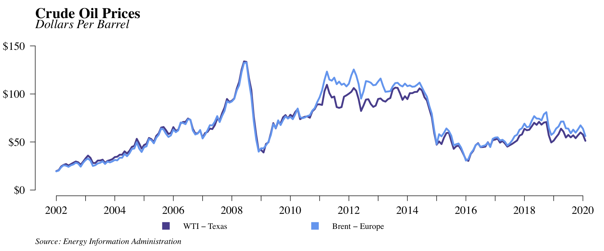
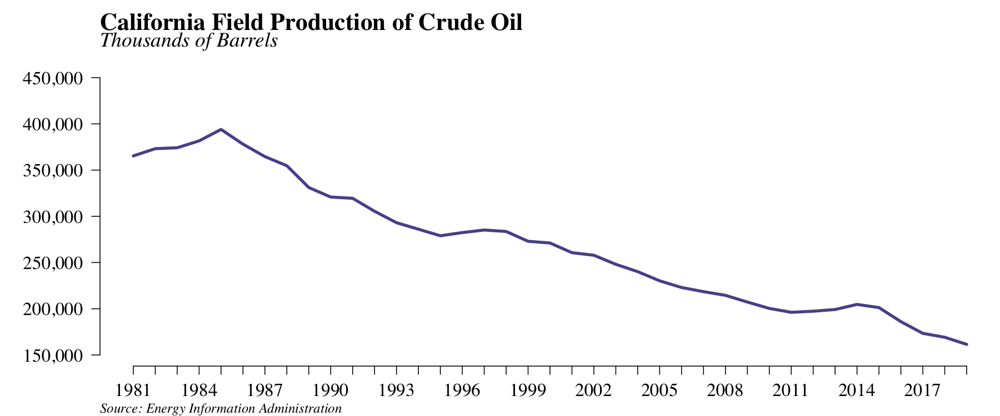
2.2.1 Oil Production
Onshore oil production has decreased to 3,494,000 BBL in 2018. Oil production has been fluctuating since 1996, reached a maximum in 2017 of 3,752,000 BBL and reached a minimum of 1,914,000 BBL in 2005. Beginning in 2008 and continuing through 2013 and 2014, however, it began to look as if an upward trend was emerging in onshore oil production as it increased by 9.9% and 12.8% in those two years. Oil production dropped significantly by 22% in 2015 to end the increasing trend in 2014.
In 2018, state offshore oil production has remained at zero for the third consecutive year. Federal oil production has fallen by 14.68% since 2017. The decrease in federal production of 4.87 million barrels compared with 59 million barrels in 1996. Starting in 2016, California has ceased all offshore production of oil. The amount of oil production is the second smallest in the data recorded, after 3.2 million barrels in 2016.
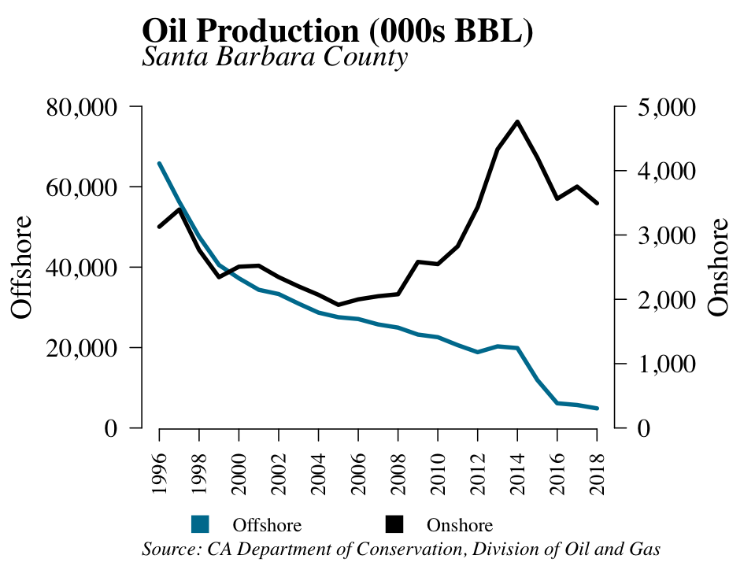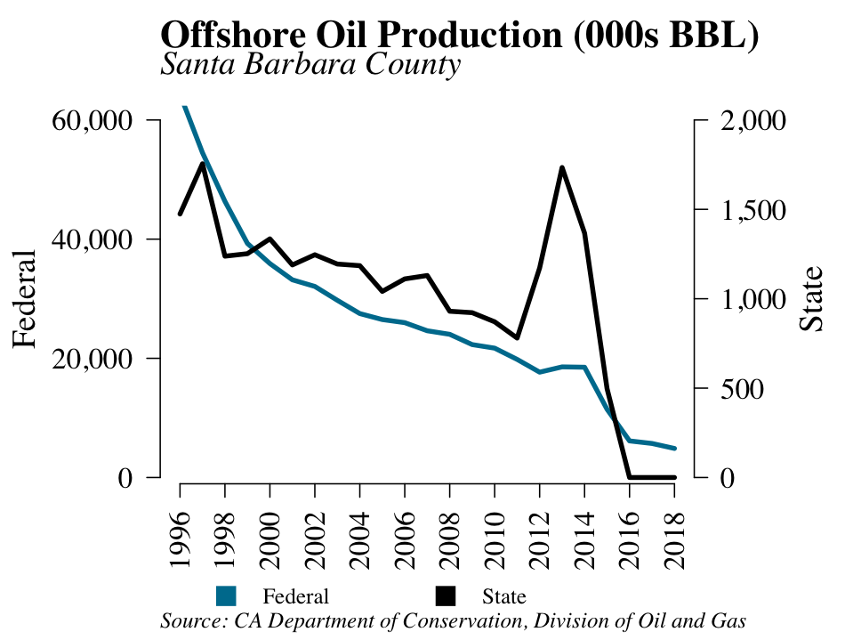
2.2.2 Gas Production
Offshore gas production by the federal government decreased by 522 barrels from 2017 to 2018. The total production of federal offshore production has been decreasing since 2014, and the largest decrease in federal offshore gas production occurred between 2014 and 2015, when production fell by about 48 percent. Since then, offshore gas production has been decreasing steadily, but at lower rates. In addition, offshore gas production by the state has stopped altogether for the first time in the data measured.
Only onshore state gas production increased in 2018 in Santa Barbara County. Gas production increased by 135,000 barrels, which is a 5.6% increase since 2017. Onshore production of gas makes up a majority of all gas production in Santa Barbara, constituting roughly 63% of total gas production.
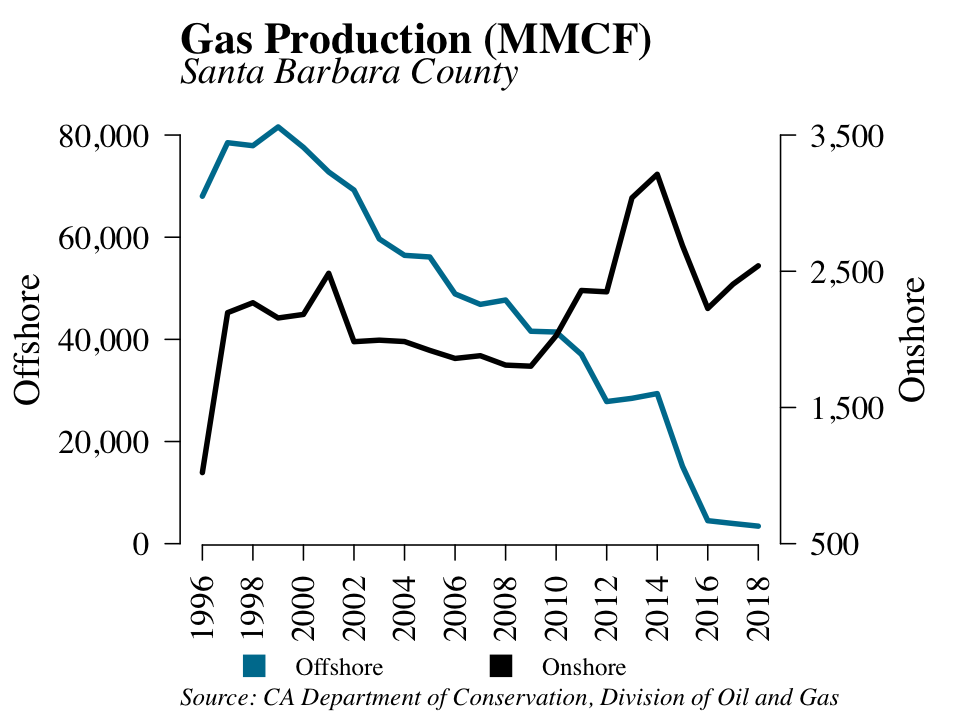
Offshore oil and gas production in the County is broken down between state and federal production. In 2018, offshore state oil production stayed at 0 barrels for the third consecutive year, while offshore state gas production fell from 1.84 MMCF to no production. This is the first-time state offshore gas production has stopped in the recorded data.
2.3 Agriculture
Key Points
- Total crop value decreased 4.3%, from $1.59 billion to $1.52 billion.
- The total value of broccoli, the county’s fifth-highest grossing crop, decreased by 49.4%, falling from $158.7 million to $80.3 million.
- Wine grapes become the second-highest grossing crop in the county, with total sales of $121.3 million.
2.3.1 Total Crop Production
The total crop value in 2018 was $1.52 billion, a decline of 4.3% from the prior year. This represents a stark break from the previous year, when the total crop value increased by 11.5%. A drastic fall in total harvested acreage of approximately 27% over the past year likely attributed to this marked difference.
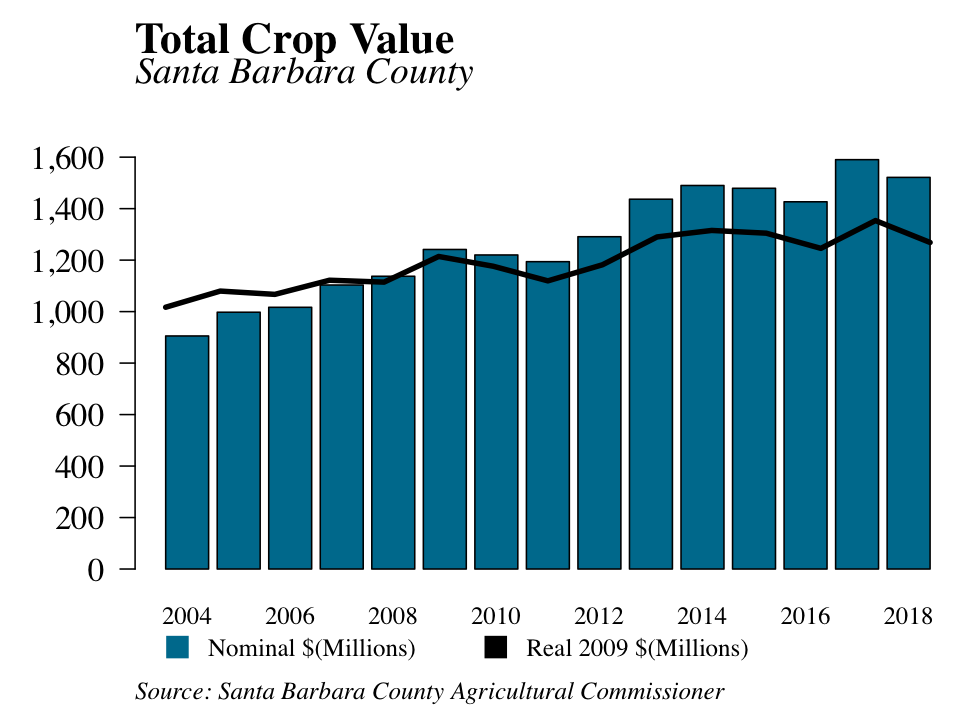
2.3.2 Leading Crops
Production of strawberries, the county’s highest-grossing crop for the past 20 years, had a gross value of $479 million. This represents a 4.7% increase in gross value of strawberry crops from 2017, which was $457 million. Though the value of the crop has increased since, the growth in gross value of the crop has slowed since 2017, when the value of strawberry crops increased by a whopping 10.4%. The decline in growth of gross value over the past year can likely be explained by the approximate 27% decrease in harvested acreage. Prior to 2017, the gross value of the strawberry crop had been decreasing for a couple of years.

Broccoli’s crop value fell drastically in 2018, decreasing from $158.7 million the previous year to $80.3 million. The 49.4% decline in gross value meant that the broccoli crop became the fifth highest grossing crop, falling from its perch at second in 2017. A 50.4% and 18.7% decrease in harvested acreage and price, respectively, explains the decline in crop value for broccoli. However, despite these trends, 2018 had a 25.6% higher yield per acre for broccoli than 2017.
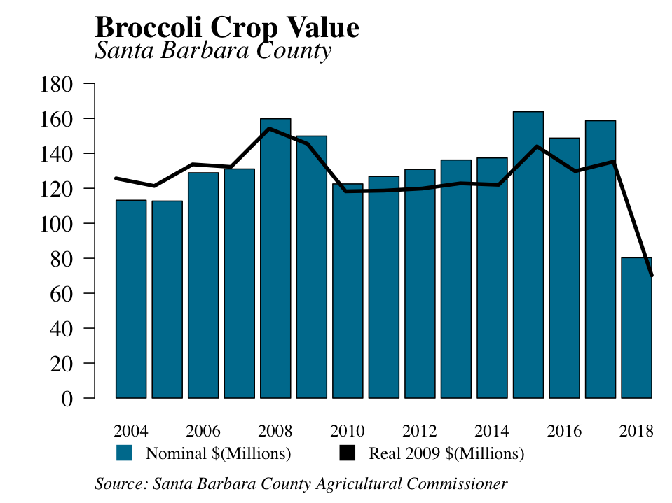
The wine grape crop’s value fell by almost 17% from 2017 to 2018, going from $146.1 million to $121.3 million. Despite the fall in gross value, the wine grape crop rose to second highest grossing crop from its place at third in 2017. The price rose, but enough to mitigate the effects of the large decline in harvested acreage and total production for all wine grapes. The price increased by 9.97%, while total production and harvested acreage of wine grapes fell by 18.7% and 25.1%, respectively.
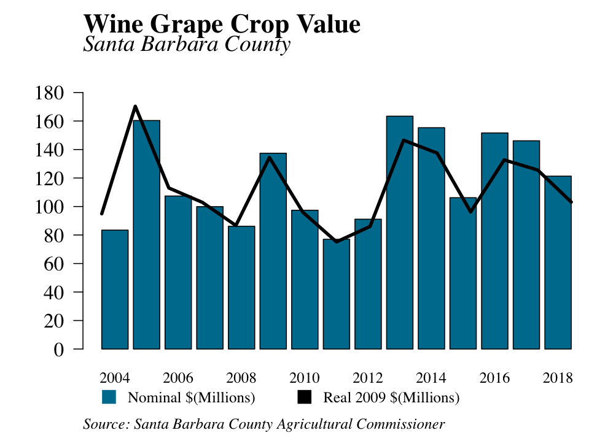
The avocado crop had a tough year in 2017—total crop value fell by 39.2% from 2016—but bounced back in 2018. Total crop value rose from $38.6 million to $52.6 million, resulting in an increase of 36.3%. This spike in crop value is due in part to an increase in yield per acre, which helped to facilitate a drastic increase in the total production of avocados. In 2018, yield per acre rose from 2.46 to 4.56, and total production simultaneously rose from 10,494 to 22,497, which translates to a 114.4% increase. Harvested acreage also rose for the avocado crop in 2018, which was likely another contributing factor for the hike in total production; harvested acreage increased by 15.6%.
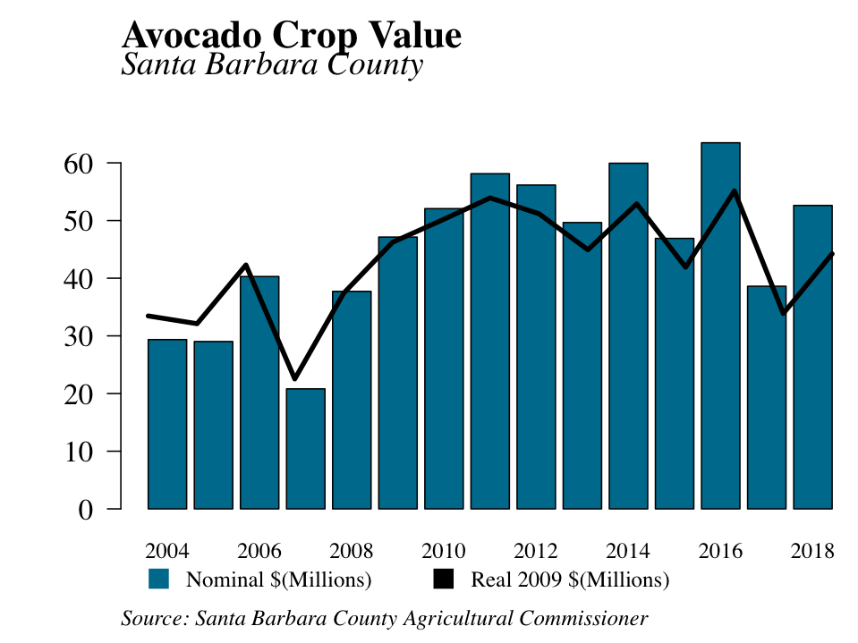
2.3.3 Wine Grape Production
In California, the average price of all grape varieties in 2018 was $831.63 per ton, 6.8% higher from the previous year. In District 8, the wine region consisting of the Santa Barbara, Ventura, and San Luis Obispo counties, the average price of all varieties was $1670 per ton, which is significantly higher than the state average. The price in District 8 fell from 2017 by 3.9%, while the total tons of grapes crushed rose from 233,228 to 245,512. Santa Barbara is best known for its Chardonnay and Pinot Noir, the former of which experienced a price increase of 0.7%, and the latter of which faced a 5.4% decrease in price. For the last three years, Cabernet Sauvignon has been the most heavily processed variety; it experienced a 13.2% increase in tons crushed and an 8.2% decrease in price over the past year.
2.3.4 Drought Recovery
Since the end of January of 2019, California has no longer been in a state of Severe Drought, according to the USDA’s five-point drought rating. For a large part of 2019, around 6% of California was Abnormally Dry. From August to December of 2019, about 2% of the state was in a Moderate Drought. In October and November, there was a large spike in the percentage of the state that was Abnormally Dry—for a great deal of November, about 80% of the state was considered Abnormally Dry. However, rainfall in December helped to bring this level down drastically, so that only approximately 3.5% of the state was Abnormally Dry by the end of the year. For most of the year, California did not experience a drought, and the periods that it did were short-lived and alleviated by rainfall.
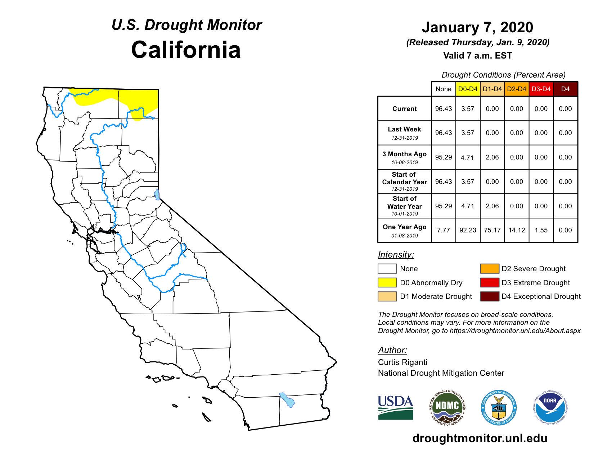
In Santa Barbara County, the city council was able to rescind the Stage Three Drought Emergency in April 2019 due to increased rainfall; however, conservation remains vital in order to preserve water for potential dry spells in the future. The winter of 2019 brought above-average rainfall, which helped alleviate the county’s seven-year drought. Forecasts show that the water supply in Santa Barbara will be able to last through 2021.